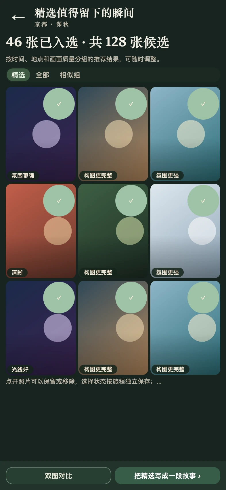
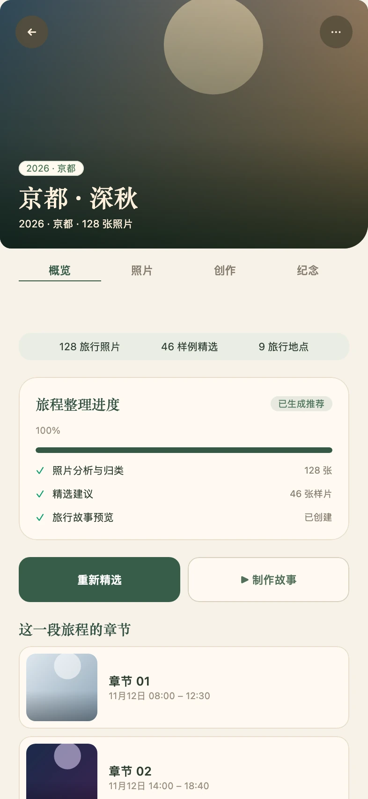

128 张候选，46 张入选
候选按时间、地点和相似度分组。每一张都能保留、替换或撤销；原片不移动、不修改、不删除。
AI 旅行选片 · iPhone
Keepsake 读完整趟旅程的相册，挑出真正值得留下的画面，再编成 15 或 30 秒的 1080p 旅行影片——免费、无水印，原片不离开你的 iPhone。
预发布 · iOS 优先 · 端侧处理、本地优先
无需账号


为什么还要一个相册应用
一趟旅行留下一千张照片，而你没有一晚上来整理。Keepsake 先做第一遍：按时间和地点分组，看清清晰度、曝光和构图，再给你一份可以推翻的精选清单。
候选按时间、地点和相似度分组。每一张都能保留、替换或撤销；原片不移动、不修改、不删除。
旅程按时间和地点分成章节。选 15 或 30 秒、三种气质之一，再手动调整顺序。
导出 1080×1920 的 H.264 影片到相册，随处分享。当前功能没有会员墙。
一条很短的路

取个名字，选好日期，授权那几天拍的照片。
Keepsake 在手机上按时间、地点分组并打分。照片不出设备。
相似的放在一起比较，留下更好的，随时撤销。选择跟着旅程走。
选时长和气质，调整顺序，导出 1080p 到相册或分享面板。
现在到哪一步
Keepsake 目前是预发布。iOS 构建已经能跑通主路径——导入、精选、故事、1080p 导出；App Store 尚未提交。所以下载按钮先置灰，不当装饰。
首个公开构建会通过 TestFlight 发出。真机测试通过之前，不承诺日期。
隐私
不需要账号，不上传原片，没有云端作品库。Keepsake 只读取你授权的照片，作品库写在本地，从不修改或删除原片。导出时把成片写入系统相册。
关于数据，或者某趟旅行没出好片：support@cygnusyang.top。
下载
App Store 页面还没上线，今天没有可安装的版本。留个邮箱，首个构建准备好时会把 TestFlight 链接发给你——只发一封，不做订阅列表。
iOS 17+ · iPhone · 预发布期间免费